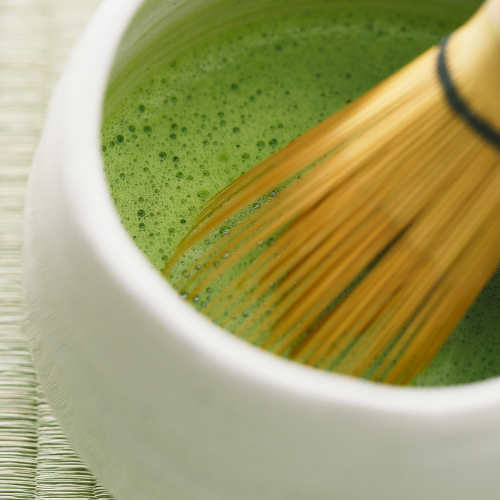

Home
Contact
Learn
History
How to Make Matcha
Blog
Recipes
How to make the Perfect Bowl of Matcha
Equipment
Matcha Powder
Chawan (tea bowl)
Chasen (bamboo whisk)
Chashaku (bamboo scoop)
Sifter (optional, for smoother matcha)

Step-by-Step Instructions
Sift the matcha powder – removes clumps
Add hot water – around 175°F (not boiling!)
Whisk in an M or W motion – until frothy
Pour into your chawan and admire the froth
Enjoy mindfully – savor the flavor and aroma